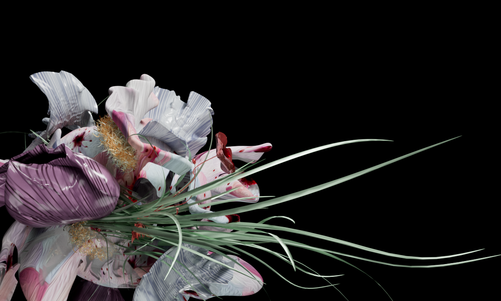
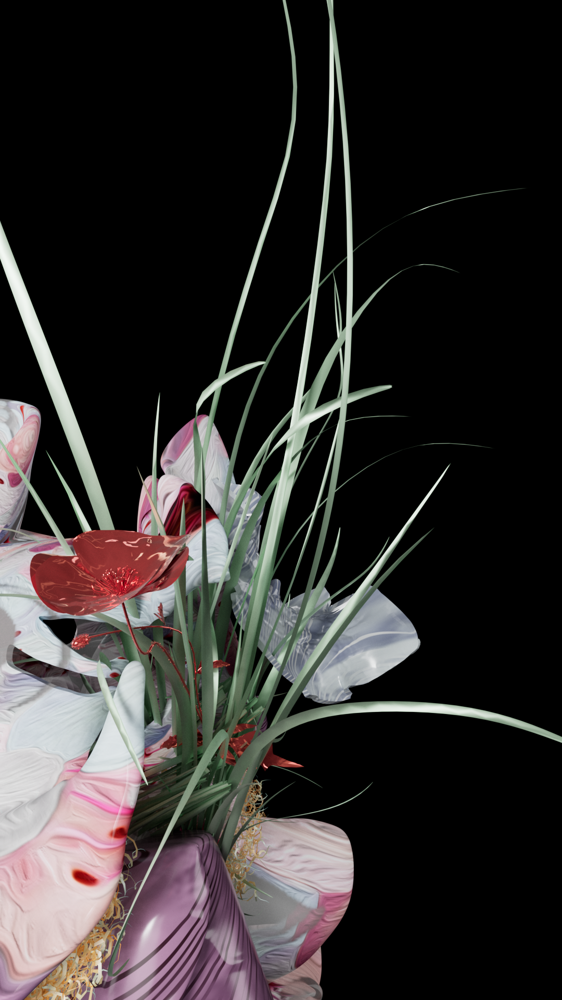
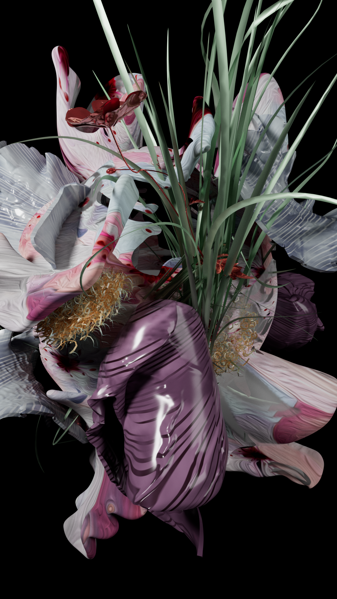
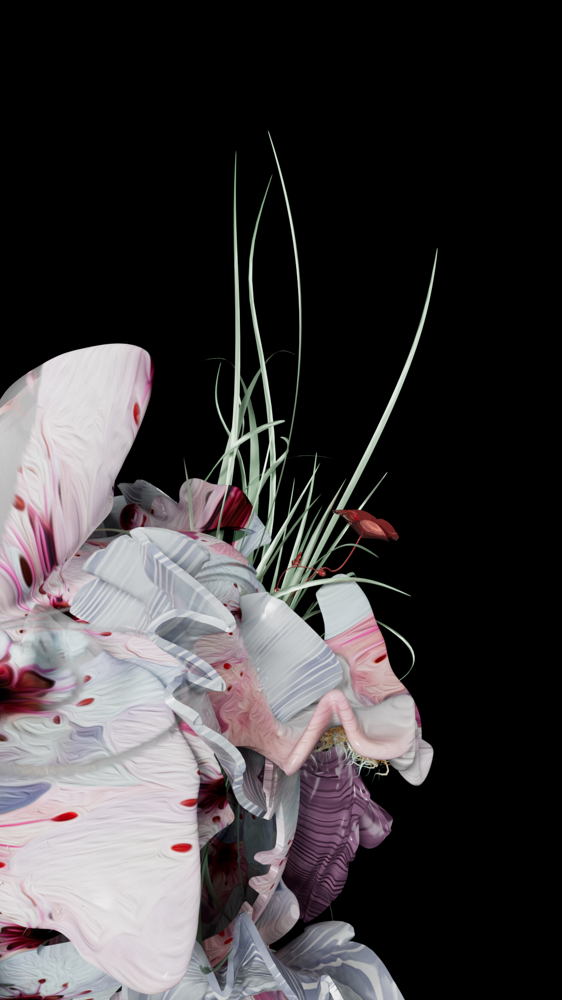

PLUMP OF THE ORGANIC
- 2023 AUTUMN
- C4D
- ZBRUSH

This project investigates the relationship between organic natural forms and digital ceramic rendering techniques. Starting in ZBrush, I sculpted flowers, weeds, and other botanical elements as individual assets. These pieces were then composed into a heart-shaped arrangement to create a vivid and emotionally charged composition. The ceramic material reinforces the fragile connotation of nature, highlighting both its elegance and vulnerability.



These three zoomed-in images reveal distinct details of the project: flowers, weeds, and vines. Each element embodies the elegance of nature while emphasizing its fragile condition. The color palette combines purple and red to reference the blood and emotional symbolism of the heart, while the green vines allude to the veins of the human body. Through these details, the project creates a visual connection between natural forms and bodily anatomy.
The visualization of this project is inspired by the pulse of a beating heart. I have always found it challenging to fully recognize the vitality of plants such as grass and flowers. Although they are living organisms, their stillness often makes their life easy to overlook. This project uses digital visualization methods to express the hidden vitality of rooted plants and to make their silent presence more perceptible.